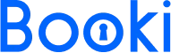
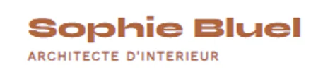
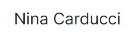

Mes projets
Booki
Création d'un site web de réservation d'hébergements

Difficultés rencontrées et surmontées
1-Compréhension des langages HTML et CSS
Il était essentiel de comprendre les principes de base du HTML et du CSS pour pouvoir créer une page web statique et responsive. Cela impliquait de maîtriser la structuration du contenu avec HTML et la mise en forme avec CSS.
2-Utilisation d'outils professionnels
Se familiariser avec des outils était nécessaire tels que Visual Studio Code pour l'édition du code, Git pour la gestion de version et GitHub pour le partage du code.
3-Découpage de la maquette
Analyser et découper la maquette fournie afin de préparer l'intégration du contenu demandait de la précision et de la méthodologie. Il était nécessaire de comprendre la structure de la page et d'identifier les éléments à intégrer.
4-Intégration du contenu
Une fois la maquette découpée, il fallait coder la page en respectant le découpage pour obtenir un résultat conforme à la maquette. Cela impliquait d'appliquer les styles CSS nécessaires pour reproduire fidèlement le design.
- HTML
- CSS
- FIGMA
Sophie Bluel - Archiwebos
Création d'une page web dynamique avec JavaScript

Difficultés rencontrées et surmontées
1-Transformation d'une Page Statique en Dynamique
Le premier défi consistait à passer d'une simple page statique à une interface web dynamique.
Comprendre comment rendre les éléments interactifs avec JavaScript n'était pas une mince affaire, mais en explorant les concepts, j'ai réussi à rendre l'interface dynamique pour l'utilisateur.
2-Gestion de l'API
Cette gestion m’a demandé une compréhension approfondie de JavaScript. J'ai dû faire preuve de patience et de détermination pour surmonter ces difficultés, en cherchant des ressources en ligne.
Une API était fonctionnelle afin de permettre la connexion au site, puis récupérer des projets contenant diverses informations grâce auxquelles j’ai pu programmer un filtrage de la galerie de photos et une modale pour ajouter/supprimer des projets.
3-Intégration des Fenêtres Modales
L'intégration des fenêtres modales pour permettre l'ajout, la modification et la suppression d'images a été une autre étape complexe.
Comprendre le fonctionnement du DOM et des événements JavaScript a été essentiel pour créer des modales interactives. J'ai dû faire preuve de débrouillardise pour surmonter ces défis, en m'appuyant sur des ressources en ligne.
- Javascript
- API
Nina Carduccci
Optimisation et Debug d'un site web

Difficultés rencontrées et surmontées
1-Optimisation des Performances et de l'Accessibilité
L'optimisation du site impliquait la restructuration du code, l'optimisation des images, la minification des fichiers et le nettoyage du dossier principal.
En parallèle, j'ai également implémenté des données structurées à l'aide du protocole Schema.org et j'ai initié des outils d'audit de performances tels que Lighthouse et d'accessibilité tels que Wave.
Cette phase a nécessité une attention particulière aux détails et une compréhension approfondie des bonnes pratiques en matière de développement web.
2-Identification et Correction des Bugs
Le débogage du site a été ma dernière tâche. À l'aide des outils de mon navigateur, j'ai pu localiser et corriger des bugs de navigation dans la modale ainsi que des problèmes de sélection de filtres.
Cette étape a demandé une analyse minutieuse du code et une compréhension approfondie des interactions entre les différentes parties du site.
3-Communication et Rapport d'Optimisation
Lors de la rédaction du rapport d’intervention, j'ai dû justifier certaines décisions prises, notamment en ce qui concerne les dernières erreurs de contraste restantes sur le site. J'ai pu améliorer significativement le référencement et l'accessibilité du site portfolio de Nina Carducci.
Ce projet m'a permis d'explorer de nouvelles notions et outils, tout en développant mes compétences en débogage et en optimisation.
- SEO
- Lighthouse
- Wave
Kasa
Création d'un site de réservation d'hébergement avec React
Difficultés rencontrées et surmontées
1-Apprentissage de React
Grâce aux cours proposés par OpenClassrooms et à la documentation officielle de React, j'ai pu acquérir les bases essentielles de ce nouveau langage.
Les heures de pratique ont également été précieuses pour consolider mes connaissances et comprendre les notions fondamentales de React.
2-Initialisation de l'Application et Utilisation de React Router
Une fois familiarisé avec React, j'ai commencé par initialiser l'application avec Vite.js et installer React Router pour gérer la navigation entre les différentes pages.
La mise en place de la logique de routage a été une étape importante pour assurer la navigation fluide à travers l'application.
3-Développement de Composants et Gestion de l'Architecture
Le projet consistait à développer une application responsive pour une agence de location de logements nommée Kasa. J'ai dû créer plusieurs composants, dont certains animés et interactifs (comme un carrousel).
La gestion de l'architecture de l'application a été un défi majeur, nécessitant une compréhension approfondie des concepts de React.
4-Utilisation de JSX et animation de Sass
La découverte du JSX et du langage Sass a été une étape importante dans le développement de l'application. J'ai appris à intégrer du JSX dans mes composants React et à utiliser Sass pour styliser l'interface utilisateur.
La création d'animations en Sass a été particulièrement enrichissante et a ajouté une dimension interactive à l'application.
- SASS
- React
- React Router
- Vite.JS
Mon Vieux Grimoire
Développement du back-end d'un site de notation de livres
Difficultés rencontrées et surmontées
1-Apprentissage des Technologies Backend
La première étape consistait à se familiariser avec Node.js, Express.js et MongoDB. Grâce aux cours méthodiques proposés par OpenClassrooms, j'ai pu acquérir les bases de ces technologies.
2-Configuration du Serveur et Installation de la Base de Données
La configuration d'un serveur Node.js pour gérer une application Express et l'installation d'une base de données MongoDB ont été les premières étapes du projet. Comprendre comment mettre en place ces éléments fondamentaux était difficile mais essentiel pour démarrer le développement de l'API.
3-Mise en Place de l'Authentification et des Fonctionnalités CRUD
Une fois le serveur et la base de données configurés, la prochaine étape qui a été la plus compliquée, était la mise en place d'un système d'authentification pour sécuriser l'accès aux fonctionnalités de l'API. Ensuite, j'ai implémenté les opérations CRUD (Create, Read, Update, Delete) pour permettre aux utilisateurs d'enregistrer, de modifier et de supprimer des livres sur le site.
4-Implémentation de la Fonctionnalité de Notation
Enfin, pour compléter le projet, j'ai ajouté la fonctionnalité de notation, permettant aux utilisateurs de noter les livres et de calculer la note moyenne. Cela a nécessité une compréhension approfondie des mécanismes de stockage et de manipulation des données dans MongoDB, ainsi que la mise en place d'algorithmes pour calculer la note moyenne de manière efficace.
- Node JS
- Express
- Mongo DB